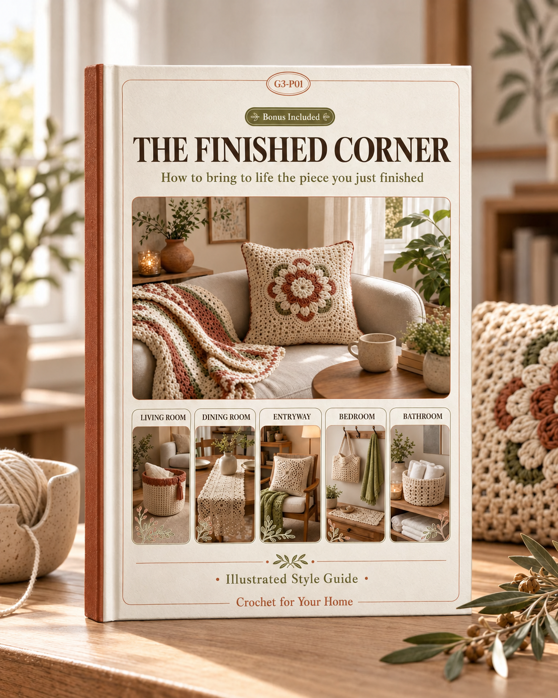

The foundations that turn handmade pieces into intentional design choices
Every handmade piece carries its own visual weight. Understanding a few core principles will help you place your crochet work so it feels purposeful, not cluttered.
Symmetrical arrangements (matching cushions on either side of a sofa, identical coasters at each place setting) create a formal, calming feel. Asymmetrical arrangements (a single textured throw draped over one armchair, a cluster of baskets in a corner) feel relaxed and modern. Most homes benefit from a mix: symmetry in your main seating area for stability, asymmetry in accent spots for interest.
Practical test: Stand in the doorway of a room and squint. If one side feels visually heavier than the other, redistribute your pieces. A large blanket on one side can be balanced by a group of three smaller items (a basket, a set of coasters, a placemat) on the other.
A common mistake is putting small crochet items on large furniture where they get lost, or oversized pieces in tight spaces where they overwhelm. Follow this general guide:
| Furniture / Space | Ideal Crochet Piece Size | Why |
|---|---|---|
| Large sectional sofa (250cm+) | Full-size throw (130×180cm) | Proportional; small throws look like a forgotten napkin |
| Armchair | Lap throw (100×130cm) or single cushion cover | Complements without drowning the chair |
| Dining table (6-seat) | Runner 35×180cm or full placemat set | Fills the center line without competing with plates |
| Nightstand | Doily or single coaster (10–20cm) | Small surface, small piece |
| Bathroom shelf | Small basket (15×15cm) | Functional, not decorative overload |
| Open bookshelf | 2–3 small baskets staggered across shelves | Adds warmth to hard surfaces without blocking the view |
Crochet looks best when it contrasts with the surfaces around it. A textured throw on a smooth leather sofa creates interest. A lacy doily on rough-hewn wood highlights both textures. The key is contrast:
Group your handmade items in odd numbers — three is ideal. Three cushions on a sofa (two matching, one accent), three baskets of varying sizes on a shelf, three coasters fanned on a coffee table. Odd groupings feel more natural and visually dynamic than pairs or fours.
When grouping, vary at least one dimension: size (small, medium, large), height (flat coaster, medium basket, tall vase on a doily), or texture (smooth, ribbed, bobbled).
Where to place what, and why it works
Each room has its own rhythm. This section gives you specific placement strategies for every major space in your home.
The living room is where your crochet work gets the most visibility. Focus on three zones: seating, coffee table, and accent corners.
| Item | Placement | Impact |
|---|---|---|
| Throw blanket | Draped over one arm of the sofa, folded in thirds | Invites touch; adds color and texture to neutral furniture |
| Cushion covers (set of 3) | Two matching at the ends, one accent in the center or on an adjacent chair | Anchors the seating area; pulls the color palette together |
| Coaster set | Stacked or fanned on the coffee table | Functional; signals care and intention |
| Storage basket (large) | Beside the sofa or under a console table | Hides clutter (remotes, magazines) while showcasing craft |
| Small basket or bowl | On a bookshelf or side table | Adds warmth to hard surfaces; can hold small items |
Never spread a throw flat across the sofa — it looks like a slipcover. Instead, fold it lengthwise in thirds and drape it diagonally over one arm. Let 15–20cm trail onto the seat for a relaxed feel. For a more structured look, fold it into a neat rectangle and place it on the seat cushion near one arm.
On a 3-seat sofa: place two larger matching cushions in the corners, one smaller accent cushion off-center. Mix textures — one smooth, one with bobbles or cables. Keep colors within the same family or use one deliberate contrast (e.g., two sage green + one mustard).
| Item | Placement | Impact |
|---|---|---|
| Table runner | Center of the table, overhanging 15cm at each end | Defines the dining centerline; adds texture to wood or glass |
| Placemats (set of 4–6) | One per place setting, 2cm from the table edge | Protects the surface; creates a cohesive place setting |
| Centerpiece mat | Under a vase or candle cluster in the table center | Grounds the focal arrangement; protects from water rings |
| Chair-back covers | Draped over the top rail of wooden dining chairs | Softens hard chairs; adds color (best for occasional dining areas) |
Tip: Do not use both a runner and placemats at the same time unless they are in contrasting textures (e.g., smooth runner + textured placemats). Doubling similar textures looks heavy.
| Item | Placement | Impact |
|---|---|---|
| Bed throw | Folded across the foot of the bed, covering the bottom third | Adds a layer of texture and color; invites evening coziness |
| Decorative pillows (2–3) | In front of sleeping pillows, varied sizes | Creates depth; makes the bed look styled, not just made |
| Bedside mat | Under a lamp or small plant on the nightstand | Softens the surface; protects from condensation rings |
| Storage basket | On or beside the nightstand | Holds books, phone, small items — practical and pretty |
Draping technique for bed throws: Unfold the throw and lay it across the bed at an angle — not perfectly straight. Let one corner drop slightly lower on one side. This asymmetry looks effortlessly styled rather than hotel-rigid.
| Item | Placement | Impact |
|---|---|---|
| Storage basket (medium) | On a shelf or counter, holding rolled towels | Spa-like organization; replaces plastic containers |
| Small basket | Near the sink, holding soap bars or cotton pads | Elevates everyday items; easy to wash |
| Hanging organizer | On the back of the door or a towel hook | Holds hair accessories, small toiletries — saves counter space |
How to make handmade pieces look professional, not homespun
The difference between a home that looks "decorated with crochet" and one that looks "professionally styled" comes down to how you layer and combine textures.
Using the same stitch everywhere creates monotony. Instead, pair contrasting textures within the same color family:
| Texture Pair | Where to Use | Effect |
|---|---|---|
| Smooth (single crochet) + Bobbled (bobble stitch) | Two cushions side by side on a sofa | Adds dimension without visual noise |
| Dense (moss stitch) + Lacy (shell pattern) | Throw over a lace doily on a table | Creates depth and contrast |
| Ribbed (front post DC) + Flat (half double crochet) | Placemat set alternating two patterns | Subtle variety in a cohesive set |
| Cable (raised cable) + Seed (seed stitch) | Blanket body vs. border | Highlights the border as a design element |
Your crochet pieces should not live in isolation. Integrating them with purchased items creates a sophisticated, layered look:
Pick a "common thread" — one element that repeats in every room. This can be:
Choose one — not all three. Too many repeated elements make the home feel like a showroom rather than a lived-in space.
You do not need to redecorate entirely. Rotate a few key pieces to refresh each season:
Show off your work beautifully, whether for social media or your own keepsake
You spent hours making something beautiful. A good photo takes 10 minutes and makes that work look as good on screen as it does in person.
Natural light is non-negotiable for crochet photography. Artificial light flattens texture, and flash creates harsh shadows that hide stitch detail.
| Shot Type | Best For | How to Set Up |
|---|---|---|
| Flat lay (directly above) | Coasters, placemats, doilies, small items | Place item on a clean surface. Stand on a chair and shoot straight down. Keep phone/camera parallel to the surface. |
| Styled scene (45° angle) | Throws on sofas, cushions, baskets in context | Arrange the item in its natural setting. Stand back 1–2 meters, crouch slightly, and shoot at about 45 degrees. |
| Detail shot (close-up) | Stitch texture, edging, color transitions | Get within 15–20cm. Focus on one small area. Use portrait mode for background blur if available. |
| Draped shot (side angle) | Blankets, throws, garments with drape | Hang the item over a chair arm or ladder. Shoot from the side to show how the fabric falls. |
DIY background on a budget: A large sheet of white foam board from a craft store ($3–5) or a folded white bedsheet creates a seamless background for flat lays. For a rustic look, a wooden cutting board works for small items.
A modern phone takes excellent crochet photos if you follow these guidelines:
Keeping your handmade pieces beautiful for years
A crocheted piece that is well cared for will last decades. One that is thrown in a hot wash will not survive the year. Here is how to protect your work.
| Fiber | Water Temp | Method | Drying | Notes |
|---|---|---|---|---|
| 100% Cotton | Cool to warm (30–40°C) | Machine on gentle cycle or hand wash | Lay flat or tumble low | Can shrink 3–5% on first wash; pre-wash if making fitted items |
| Acrylic | Cool to warm (30°C) | Machine on gentle cycle | Lay flat (do not tumble dry) | Heat damages acrylic — it melts and loses softness permanently |
| Wool | Cool only (20–30°C) | Hand wash only, no agitation | Roll in a towel, then lay flat | Agitation = felting. Never wring, twist, or machine wash. |
| Cotton-Acrylic Blend | Cool (30°C) | Machine gentle or hand wash | Lay flat | Follow the more delicate fiber's rules (acrylic) |
| Bamboo / Tencel | Cool (30°C) | Hand wash preferred | Lay flat, reshape while damp | Loses shape when wet; handle gently |
Most crochet damage is fixable at home:
| Problem | Fix | Time |
|---|---|---|
| Snagged yarn (pulled loop) | Use a blunt tapestry needle to gently push the loop back through to the wrong side. Work from the wrong side, pulling the slack through neighboring stitches until the tension evens out. | 2–5 min |
| Loose stitches | Thread a yarn needle with matching yarn. On the wrong side, weave through the loose stitch base to tighten. Secure with a small knot if needed. | 5–10 min |
| Pilling (fuzz balls) | Use a fabric shaver or a disposable razor held flat against the surface. Work gently in one direction. Acrylic pills more than cotton — regular shaving is normal. | 10–15 min |
| Small hole (1–3 stitches) | Using matching yarn and a crochet hook, recreate the missing stitches by anchoring into the surrounding stitch bases. Weave in ends on the wrong side. | 15–30 min |
| Curling edges | Wet block the piece: soak in cool water for 20 min, pin to shape on a blocking mat, let dry completely. | 20 min + drying |
Re-block your crochet pieces when:
Quick blocking: For items that just need a light refresh, mist with water from a spray bottle, reshape with your hands, and lay flat to dry. Full wet-blocking is only needed for significant reshaping.
Tying everything together with a unified design vision
The goal is not to crochet-ify every room. It is to use a few well-chosen handmade pieces to give your home a warm, intentional character that feels uniquely yours.
Your crochet pieces should complement your existing decor, not fight against it. Identify which style fits your home (or the style you are building toward), and choose textures and patterns accordingly:
| Home Style | Best Crochet Textures | Best Patterns | Color Palette |
|---|---|---|---|
| Modern / Minimalist | Smooth, clean stitches (SC, HDC) | Simple geometric, solid colors, minimal border | White, grey, black, one accent (mustard or sage) |
| Farmhouse | Chunky, textured (cables, bobbles) | Classic granny squares, ripple, basket weave | Cream, soft blue, sage, terracotta |
| Boho | Lacy, open-work, fringe | Mandala, dreamcatcher-inspired, macrame-style | Earthy tones, mustard, rust, dusty pink, cream |
| Coastal | Light cotton, open stitches | Shell stitch, wave pattern, simple rounds | White, sandy beige, soft blue, seafoam |
| Scandinavian | Clean, dense stitches | Moss stitch, seed stitch, simple stripes | White, light grey, pale pink, muted blue |
| Eclectic / Maximalist | Mix freely — variety is the point | Color-block, patchwork, mixed motifs | Bold, varied — tie together with one recurring color |
Before you start making items, plan what each room needs. This prevents random accumulation and ensures every piece has a purpose:
You do not need to buy expensive yarn or make dozens of pieces. These high-impact, low-cost ideas create a noticeably different home:
You now have the design knowledge to transform your home with handmade crochet pieces that look intentional, professional, and beautiful.
Start with one room, one piece, one weekend. The transformation begins the moment you place your first finished item and see how it changes the space.
Return to the main collection for the patterns, and use this guide as your styling reference every time you finish a new piece.